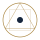
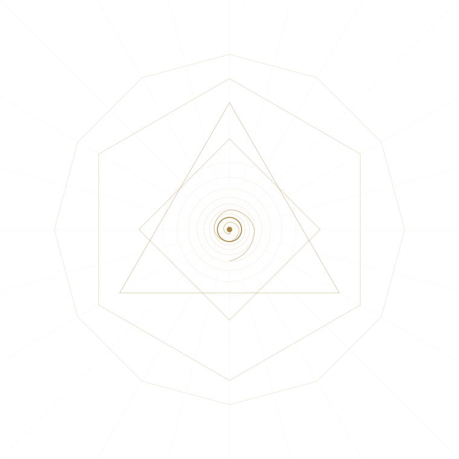
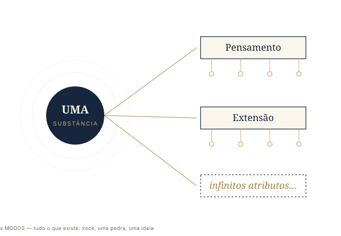
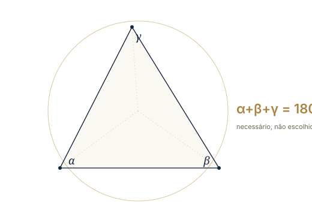

Spinoza para o século XXI — uma leitura moderna da obra
que dissolveu a fronteira entre Deus e a Natureza

“Tudo o que existe, existe em Deus;
e nada pode ser, nem ser concebido, sem Deus.”
PROPOSIÇÃO XV
Spinoza abre a Ética de um modo que ainda hoje desconcerta: com definições, axiomas e proposições numeradas, encadeadas como num tratado de geometria. Não é mania de matemático nem frieza gratuita. Por trás do método há uma convicção vertiginosa — a de que o universo é matematicamente perfeito, isto é, que tudo o que existe decorre da natureza da realidade com a mesma necessidade rigorosa com que as propriedades de um triângulo decorrem da sua definição. Onde a tradição via um Deus que delibera, escolhe e poderia ter feito diferente, Spinoza vê uma ordem que não poderia ser de outro jeito, e que por isso pode ser demonstrada. Escrever “à maneira dos geômetras” (ordine geometrico) é, para ele, a única forma honesta de falar de Deus: sem apelo à fé, à autoridade ou ao medo, apenas razão atrás de razão. Este livro não desmonta esse andaime — ele o traduz para o português de hoje. Você encontrará as proposições e demonstrações originais destacadas, com sua referência exata, e ao redor delas a explicação que torna o argumento respirável sem traí-lo.
Sempre que aparecer um bloco destacado com um selo (por exemplo, Parte I · Prop. XV), é a voz do próprio Spinoza, modernizada mas fiel ao sentido. Os blocos menores marcados Demonstração reconstroem, em linguagem atual, a prova que ele dá — porque metade da beleza do livro está justamente em como cada passo se sustenta no anterior. O texto corrido é o guia. Não é preciso decorar a numeração: basta seguir o fio, que nunca se rompe.
Antes de provar coisa alguma, Spinoza fixa o vocabulário, e o faz com a parcimônia de um geômetra que define seus termos antes do primeiro teorema. Toda a Parte I — e, no fundo, o livro inteiro — repousa sobre três palavras. Entendê-las é já ter percorrido metade do caminho. Substância é aquilo que existe por si e se concebe por si: algo que não depende de nenhuma outra coisa nem para existir nem para ser pensado. Por contraste, um modo é tudo aquilo que existe em outra coisa e só pode ser concebido por meio dela — qualquer coisa particular e passageira: você, esta página, uma pedra, um número, um pensamento. Entre os dois está o atributo, que é cada forma fundamental pela qual o intelecto apreende a essência da substância — um rosto pelo qual o real se mostra. Nós, humanos, conhecemos apenas dois desses rostos: o Pensamento e a Extensão (o espaço, a matéria); Spinoza insiste, porém, que a substância tem infinitos atributos, dos quais esses dois são a parte que nos toca.

Repare na hierarquia, porque dela tudo deriva: a substância vem primeiro, e os modos são apenas seus estados, como as ondas que existem “na” água sem jamais serem outra coisa que água em movimento. Você não é uma coisa ao lado da realidade; você é uma maneira pela qual a realidade, num certo ponto, acontece. Dessa ordenação aparentemente árida — três definições e alguns axiomas — Spinoza extrairá, passo a passo e sem nunca apelar para fora do argumento, uma das teses mais radicais já escritas.
O argumento agora ganha velocidade, e convém acompanhá-lo de perto, pois é aqui que a aritmética do ser se decide. Duas substâncias só poderiam diferir uma da outra de duas maneiras: ou por seus atributos, ou por seus modos. Mas os modos são posteriores e dependentes — postos de lado eles, sobra apenas o atributo para distinguir; logo, não pode haver duas substâncias com o mesmo atributo, pois nada restaria para separá-las e elas seriam, na verdade, uma só. Some-se a isso que uma substância, por definição, não depende de nada externo: ela não pode ser produzida ou causada por outra coisa, porque então dependeria dessa coisa para ser concebida e deixaria de ser substância. Se nada externo a produz, ela é causa de si mesma — e daí decorre o primeiro grande resultado:
A existência pertence à natureza da substância: a sua essência envolve necessariamente o existir.
Demonstração A substância não pode ser produzida por nada exterior a si (pois nada externo a determina); ela é, portanto, causa de si mesma — ou seja, sua própria essência implica existir. Dizer que se compreende com clareza uma substância e ainda duvidar se ela existe seria como ter uma ideia verdadeira e suspeitar que talvez seja falsa: contradição pura. ∎
E se a substância existe por sua própria natureza, sem nada que a limite de fora, então ela não pode ser parcial, recortada, finita — pois ser finito é justamente ser limitado por outra coisa do mesmo gênero. Daí o segundo resultado, que parece abstrato mas é o pivô de tudo:
Toda substância é necessariamente infinita.
Agora junte as peças que foram sendo travadas uma na outra: a substância existe necessariamente, é infinita, e não pode haver duas com o mesmo atributo. Spinoza dá então o nome àquilo que vinha descrevendo sem pressa. Chama de Deus o ser absolutamente infinito — a substância que consiste em infinitos atributos, cada qual exprimindo uma essência eterna e infinita. E, num gesto que escandalizou seu século, não pede que você acredite na existência desse Deus: ele a demonstra.
Deus — a substância que consiste em infinitos atributos, cada um exprimindo essência eterna e infinita — necessariamente existe.
Demonstração De cada coisa é preciso poder dar uma razão, seja para que exista, seja para que não exista. Se Deus não existisse, teria de haver uma causa que o impedisse — e essa causa estaria ou na natureza de Deus, ou fora dela. Fora dela, seria outra substância de outra natureza, que nada teria em comum com Deus e, portanto, nem poderia tocá-lo. Dentro de sua natureza, seria preciso que a própria essência de um ser absolutamente perfeito encerrasse uma contradição — o que é absurdo. Não havendo causa, nem interna nem externa, que negue sua existência, Deus necessariamente existe. ∎
“Deus”, aqui, não é uma pessoa: não tem barba nem voz, não pune nem perdoa, não escolheu criar o mundo numa terça-feira. É o nome que Spinoza dá à realidade total enquanto ela existe por si mesma, necessária e infinita. Guarde essa estranheza — ela é o coração do panteísmo, e é justamente o que faltava para o salto seguinte.
Se Deus é essa substância infinita e única, resta perguntar: sobra alguma coisa fora dele? Poderia existir um segundo ser, independente, ao lado de Deus? A resposta fecha a primeira metade da Parte I e prepara o golpe final. Qualquer outra substância teria de ter algum atributo; mas todos os atributos já pertencem a Deus, que é infinito; logo, essa “outra” substância partilharia um atributo com Deus — e já vimos que isso é impossível. Portanto:
Além de Deus, nenhuma substância pode existir nem ser concebida.
Se só existe uma substância, e ela é infinita, então — repare na inevitabilidade do passo — não há absolutamente nada que esteja “de fora”. Não há um Deus em um lugar e o universo em outro, o criador de um lado e a criatura do outro. Tudo o que há — cada estrela, cada bactéria, cada número, cada emoção que atravessa você agora — são modos dessa única substância, maneiras finitas pelas quais o infinito se exprime. É a conclusão para a qual a parte inteira foi, proposição após proposição, abrindo caminho:
Tudo o que existe, existe em Deus; e nada pode ser, nem ser concebido, sem Deus.
Esta é a frase que selou a fama de Spinoza — e que, aos vinte e três anos, lhe custou a mais dura excomunhão já pronunciada por sua comunidade. Em latim, ele a condensa numa expressão que se tornou célebre: Deus sive Natura, “Deus, ou seja, a Natureza”. As duas palavras não nomeiam coisas distintas que por acaso coincidem; nomeiam o mesmo, visto de dois ângulos. Não é que Deus tenha feito a natureza, como um artesão modela um vaso e depois se afasta da obra. Deus e natureza são um único processo infinito: a Natureza naturante — a substância enquanto potência ativa que eternamente se produz — e a Natureza naturada — a totalidade dos modos que dessa potência decorrem. O mundo não foi criado num instante do passado; ele está sendo deduzido, eternamente, da natureza de Deus, do mesmo modo necessário e atemporal com que de um triângulo se segue que seus ângulos somam dois retos.

As consequências são imensas, e ocuparão as quatro partes seguintes. Se nada está fora da Natureza, então não há milagres em sentido próprio — só leis que ainda não compreendemos. Não há um plano traçado para a sua vida por uma vontade externa que o vigia — só uma trama infinita de causas das quais você é um nó. E, no entanto, longe de empobrecer o mundo, Spinoza o sacraliza por inteiro: se tudo está em Deus, então debruçar-se sobre uma folha, sobre um teorema ou sobre a própria mente deixa de ser distração profana e passa a ser uma forma de conhecer o divino. É por isso que a liberdade, no final do livro, não será definida como escapar dessa ordem — coisa impossível —, mas como compreendê-la a ponto de coincidir com ela. Conhecer a necessidade é a forma spinozana de ser livre.
Quanto mais compreendemos as coisas singulares, mais compreendemos Deus. — antecipando a Parte V
Foi até aqui que esta amostra quis te levar: do estranho método geométrico, que se revela uma aposta na inteligibilidade matemática do real, ao salto panteísta que te trouxe a este livro. Se o tom, a densidade e o visual te servem, é exatamente neste padrão — proposição, demonstração e explicação, costuradas por arte geométrica — que as cinco partes inteiras, e o posfácio sobre Deus, a Natureza e a era da inteligência artificial, serão construídas.